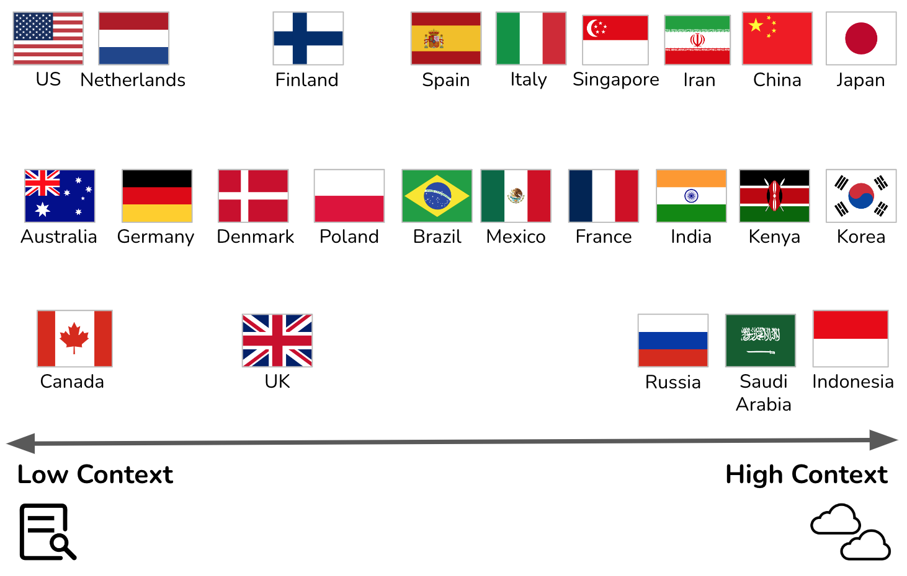
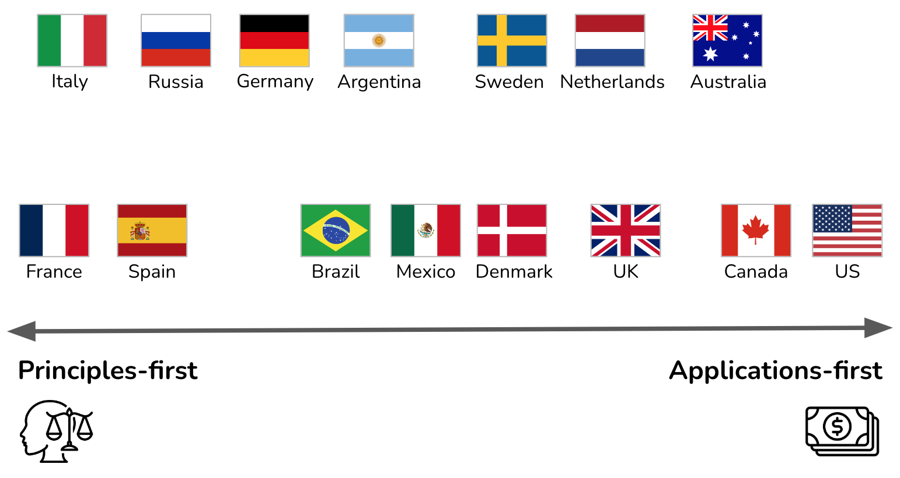
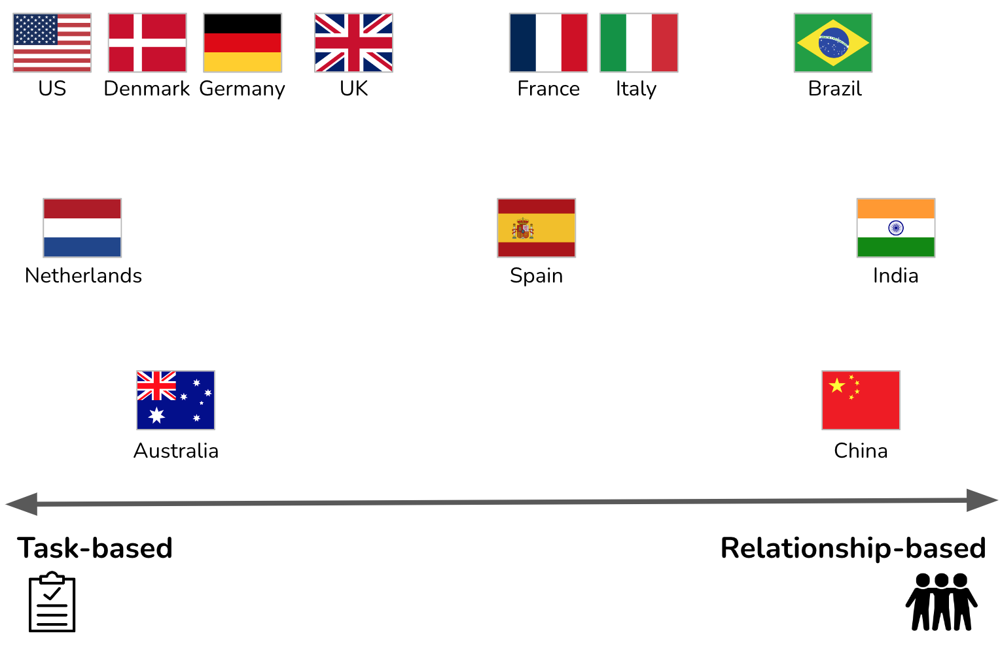
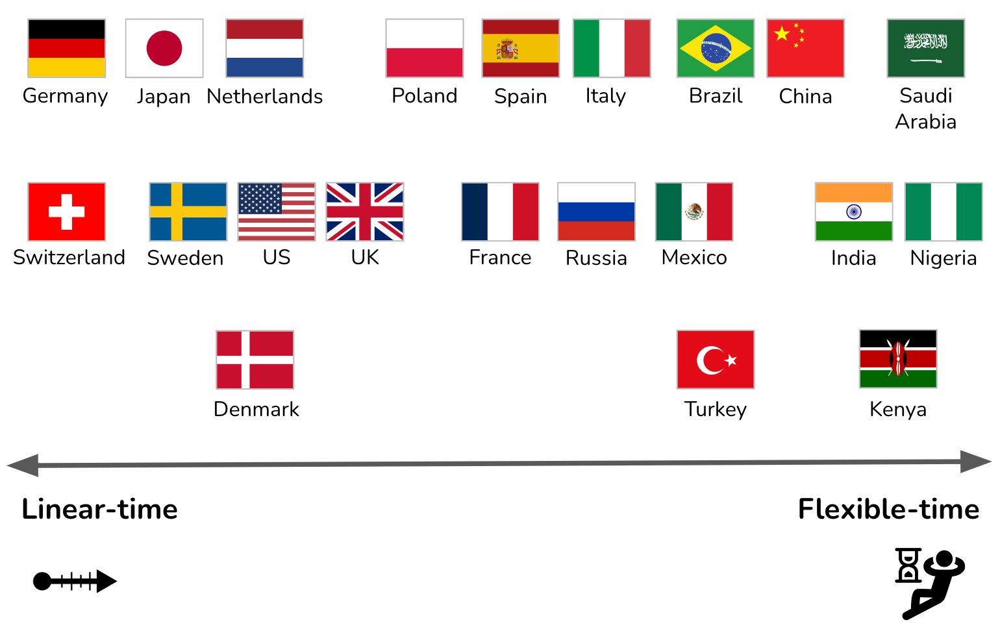

The Culture Map: Architects' Culture Compass
IN THIS SECTION, YOU WILL: Get an introduction to The Culture Map, a helpful tool for architects to work harmoniously with people from various cultures and backgrounds.
KEY POINTS:
- I have found the work of Erin Meyer, The Culture Map, to be a beneficial tool for architects to work harmoniously with people from various cultures and backgrounds.
- Meyer’s model contains eight scales, each representing a key area, showing how cultures vary from extreme to extreme: Communicating, Evaluating, Persuading, Leading, Deciding, Trusting, Disagreeing, and Scheduling.
In multinational organizations, architects will need to work with many different cultures. Awareness of cultural differences is even more important for architects, as they are bridging diverse cultures and domains (technology, business, product, organization).
The work of Erin Meyer, The Culture Map, is a beneficial tool for working harmoniously with people from various cultures and backgrounds. Meyer’s model contains eight scales, each representing a key area, showing how cultures vary from extreme to extreme. The eight scales describe a continuum between the two ends which are diametric opposite or competing positions:
- Communicating – Are cultures low-context (simple, verbose, and clear) or high-context (rich deep meaning in interactions)?
- Evaluating – When giving negative feedback, does one give it directly or prefer being indirect and discreet?
- Persuading – Do people like to hear specific cases and examples or prefer detailed holistic explanations?
- Leading – Are people in groups egalitarian or prefer hierarchy?
- Deciding – Are decisions made in consensus or made top-down?
- Trusting – Do people base trust on how well they know each other or how well they work together?
- Disagreeing – Are disagreements tackled directly, or do people prefer to avoid confrontations?
- Scheduling – Do people see time as absolute linear points or consider it a flexible range?
It is essential to highlight that a culture map is a framework used to understand and compare cultural differences in a nuanced and respectful way. It aims to highlight the diverse ways people communicate, work, and interact. Unlike stereotypes, which are often oversimplified and fixed ideas about a group of people, culture maps recognize the complexity and variability within cultures.
Consequently, while cultural generalizations, like the culture map, can be helpful, it is crucial to realize that they are just that - generalizations. Many individuals from a particular culture will not fit neatly into these categories, and there can be significant variation within a single culture. It is best to approach cultural differences with an open mind and a willingness to learn.
I experience the culture map as enriching and broadening my interactions with people. Where I would previously be shocked by others’ behavior, the culture map reminds me that I may be interpreting other actions too constrained by my cultural background.
Communicating
Architects need to be good communicators. But what do we mean when saying someone is a good communicator? The responses differ wildly from society to society.
Meyer compares cultures along the Communicating scale by measuring the degree to which they are high- or low-context, a metric developed by the American anthropologist Edward Hall (Figure 1).
In low-context cultures, good communication is precise, simple, explicit, and clear. People take messages at face value. Repetition, clarification, and putting messages in writing are appreciated.
In high-context cultures, communication is sophisticated, nuanced, and layered. Statements are often not plainly stated but implied. People put less in writing, more is left open to interpretation, and understanding may depend on reading between the lines.
Architects should be able to understand and adapt to different communication styles. But when actively communicating, I find it crucial that architects provide low-context explanations. Architects will deal not only with the diverse cultural backgrounds of people but with different professional communities (technology, product, marketing, sales, finance, strategy), each with their own specific cultures and buzzwords. To bridge such diverse communities, communicating in a culture-sensitive and buzzword-free way is a valuable skill for any architect.
 Figure 1: The Communicating scale: a graphical representation of some Culture Map countries (the cultural context of my recent professional interactions).
In IT architecture and Software Engineering, communication problems often arise due to the diverse cultural backgrounds and professional communities involved in projects. Here are some examples that relate to the dimension of architects needing to be culture-sensitive communicators:
- Misunderstanding Due to High-Context Communication:
- Scenario: An architect from a high-context culture presents a new system design to a global team. The architect uses indirect language, implying certain requirements or risks without stating them explicitly, expecting the team to understand the subtleties and read between the lines.
- Problem: Team members from low-context cultures may miss critical nuances or interpret the communication literally, leading to misunderstandings about the scope, priorities, or potential risks in the project. This issue can result in errors in implementation, overlooked risks, or misaligned expectations.
- Overwhelming Detail in Low-Context Communication:
- Scenario: An architect from a low-context culture explains a system architecture to a multinational team meticulously, covering every aspect explicitly with extensive documentation.
- Problem: Team members from high-context cultures may find this approach overwhelming, unnecessary, or even insulting, as it could imply a lack of trust in their ability to understand without excessive clarification. This problem can lead to disengagement, frustration, or a failure to consider the system’s more implicit or contextual aspects that high-context communicators might naturally consider.
- Failure to Adapt Communication to Different Professional Cultures:
- Scenario: An architect communicates a technical decision to a non-technical team using complex jargon and technical buzzwords without simplifying or contextualizing the information.
- Problem: Non-technical stakeholders might not understand the implications of the decision, leading to a lack of alignment or support for the project. This problem could result in delays, budget issues, or misinformed strategic decisions that negatively impact the project’s success.
- Cultural Misalignment in Feedback and Collaboration:
- Scenario: During a project review, an architect from a low-context culture directly criticizes a design choice made by a team member from a high-context culture, expecting the feedback to be taken at face value and used for improvement.
- Problem: The team member might perceive the direct criticism as rude or disrespectful, leading to tension or a breakdown in collaboration. In high-context cultures, people often give feedback subtly to maintain harmony, so the direct approach might cause more harm than good.
- Confusion Over Ambiguous Requirements:
- Scenario: A project involves gathering requirements from stakeholders in a high-context culture, where the stakeholders communicate their needs and expectations implicitly or vaguely.
- Problem: Architects and engineers from low-context cultures might struggle to extract clear, actionable requirements, leading to a design that does not fully meet the stakeholders’ expectations. The lack of explicit communication can result in gaps in the final product, requiring rework and causing delays.
These examples highlight the importance of being aware of cultural differences in communication styles and the need for architects to adapt their communication approach based on the context and audience. Balancing between low-context clarity and high-context nuance can help ensure that messages are understood as intended, reducing the risk of miscommunication in complex, multicultural projects.
Evaluating
Architects need to provide constructive criticism of the plans and ideas of others. All cultures believe that people should give criticism constructively, but the definition of “constructive” varies greatly.

The Evaluating scale measures a preference for frank versus diplomatic feedback. Evaluating is different from the Communicating scale; many countries have different positions on the two scales. According to Meyers, the French are high-context (implicit) communicators relative to Americans. Yet they are more direct in their criticism. Spaniards and Mexicans are at the same context level, but the Spanish are much franker when providing negative feedback (Figure 2).
Providing constructive criticism in the right way is crucial for architects to make any impact. Sometimes the same feedback will lead to different reactions, even within the same teams with members from diverse backgrounds. Being too positive in some cultures leads to underestimation of the significance of the feedback. Being too negative may result in pushback and rejection. In my experience, architects need to adapt their feedback to the audience and do lots of “duplication” by presenting the same feedback differently to diverse groups.
 Figure 2: The Evaluating scale: a graphical representation of some Culture Map countries (the cultural context of my recent professional interactions).
Figure 2: The Evaluating scale: a graphical representation of some Culture Map countries (the cultural context of my recent professional interactions).
In IT architecture and Software Engineering, providing constructive criticism is essential to ensure that ideas are refined and projects succeed. Here are some examples of issues that relate to architects providing constructive criticism:
- Overly Direct Feedback Leading to Resistance:
- Scenario: An architect from a culture that values directness in feedback reviews a design document created by a team member from a culture that values more diplomatic feedback. The architect bluntly points out flaws in the design, focusing on what is wrong without much positive reinforcement.
- Problem: The team member from the diplomatic culture may perceive the feedback as overly harsh or even disrespectful. Instead of motivating improvement, this direct approach may lead to defensiveness, loss of face, or reluctance to engage in future discussions. Though technically valid, the criticism may not result in the desired improvements due to cultural misalignment.
- Overly Diplomatic Feedback Leading to Misunderstanding:
- Scenario: An architect from a culture that values indirect communication provides feedback on a technical proposal from a team member from a culture that expects more straightforward feedback. The architect couches the criticism positively, saying, “This is a great start, but maybe we could consider some adjustments.”
- Problem: Team members from the direct-feedback culture may not grasp the seriousness of the issues being raised. The subtlety might lead them to underestimate the need for changes, resulting in a final product that falls short of expectations. The feedback is not acted upon as strongly as it should be, leading to potential project setbacks.
- Cultural Differences in Group Settings:
- Scenario: During a design review meeting, an architect from a culture that values group harmony provides criticism very indirectly, using vague terms to avoid singling out any individual. The meeting includes team members from cultures more accustomed to direct feedback in group settings.
- Problem: The more direct cultures may find the feedback unhelpful or confusing, as the indirect criticism doesn’t identify the issues or the individuals responsible for them. This problem could lead to inaction or misunderstandings about what the team must address. On the other hand, if the architect tries to adapt and provides more direct feedback, it might cause discomfort or embarrassment for those not used to such an approach.
- Mixed Reactions in Diverse Teams:
- Scenario: An architect leads a multinational team with members from various cultural backgrounds, including high-context and low-context cultures. During a code review, the architect provides criticism in a balanced way, aiming to be constructive by combining positive feedback with suggestions for improvement.
- Problem: The feedback is received differently across the team. Team members from cultures that prefer direct feedback may feel that the criticism is too soft and doesn’t address the real issues. In contrast, those from cultures that prefer more diplomatic feedback may feel the criticism is too harsh. This results in confusion and varying degrees of engagement with the feedback, making it difficult for the team to move forward cohesively.
- Feedback in Written vs. Verbal Form:
- Scenario: An architect from a culture that values written feedback for clarity and record-keeping provides detailed written criticism of a system architecture proposal. The feedback is sent to a team member from a culture that prefers face-to-face communication for sensitive matters.
- Problem: The written feedback, although clear and precise, may be perceived as impersonal or even confrontational by the team member, especially if it touches on significant flaws. The lack of a personal touch might lead to misinterpretation of the architect’s tone and intent, reducing the effectiveness of the feedback and potentially harming the working relationship.
These examples illustrate how cultural differences in the perception of “constructive” feedback can lead to communication problems in software engineering and IT architecture. Architects must be aware of these differences and adapt their feedback style according to their audience’s cultural expectations to ensure that their criticism is both understood and acted upon effectively.
Persuading
Architects frequently need to persuade others about decisions and plans. How you influence others and the arguments people find convincing are deeply rooted in culture’s philosophical, religious, and educational assumptions and attitudes.
The Persuading scale assesses how people balance holistic and specific thought patterns. According to Meyers, a Western executive will break down an argument into a sequence of distinct components (specific thinking). At the same time, Asian managers show how the pieces fit together (holistic thinking). Beyond that, people from southern European and Germanic cultures tend to find deductive arguments (principles-first arguments, building the conclusion from basic premises) most persuasive. In contrast, American and British managers are more likely to be influenced by inductive, applications-first logic (Figure 3).
Architects must be able to persuade in both applications-first and principles-first ways. In addition to cultural differences, the additional complication comes from talking to diverse audiences. For instance, C-level executives typically have less time and may prefer applications-first presentations (“get to the point, stick to the point”). While in other parts of the company, you may need to spend a long time carefully building the argument following the principal first approach. I typically aim to prepare well for both, having a short management summary and easily retrievable all supporting evidence.
 Figure 3: The Persuading scale: a graphical representation of some Culture Map countries (the cultural context of my recent professional interactions).
In IT architecture and Software Engineering, effectively persuading stakeholders is critical for gaining buy-in on decisions and plans. Here are some examples that illustrate communication problems related to the “Persuading” dimension:
- Mismatch Between Holistic and Specific Thought Patterns:
- Scenario: An architect from a Western culture presents a detailed, step-by-step plan for a new software architecture to a team that includes members from East Asian cultures. The architect breaks down the argument into distinct components, expecting the team to follow the logic sequentially.
- Problem: The team members from East Asian cultures, who may prefer holistic thinking, might struggle to see how these separate components fit into the broader system. They might find the argument less convincing because it doesn’t address the overall harmony and integration of the system from the outset. As a result, the team meets the architect’s proposal with skepticism or requests for a more integrated explanation.
- Differences in Deductive vs. Inductive Reasoning:
- Scenario: An architect must convince a multinational team to adopt a new technology stack. The architect, coming from a Germanic culture, uses a deductive approach, starting with fundamental principles of software design and building towards the conclusion that the new technology is the best choice.
- Problem: Team members from Anglo-Saxon cultures might find this approach tedious and unconvincing because they prefer an inductive approach, where the argument starts with practical examples of successful technology applications. The architect’s failure to start with concrete examples may lead to a lack of engagement or difficulty in convincing these stakeholders.
- C-Level Executives Preferring Applications-First Approach:
- Scenario: The task of an architect is to persuade a group of C-level executives to approve a major overhaul of the company’s IT infrastructure. The architect, aware of the executives’ preference for brevity, attempts to persuade them using an applications-first approach, highlighting the immediate business benefits and ROI.
- Problem: Some executives, particularly those with engineering or technical backgrounds from cultures that value principles-first reasoning, may find this approach insufficient. They may want to see the underlying principles and technical justifications before being convinced, leading to a potential disconnect and hesitation to approve the plan.
- Persuasion in Multicultural Teams with Varying Expectations:
- Scenario: An architect works with a diverse project team that includes members from holistic and specific-thinking cultures. The architect tries to persuade the team to adopt a new project management tool by explaining its detailed features and benefits in a specific, component-by-component manner.
- Problem: The holistic thinkers on the team might find this argument unconvincing because it doesn’t address how the tool fits into the broader workflow or organizational goals. On the other hand, the specific thinkers might be satisfied with the details but may miss the overall strategic alignment. The architect’s failure to balance both thought patterns results in partial buy-in, with some team members remaining unconvinced.
- Educational and Philosophical Influences on Persuasion:
- Scenario: An architect trained in a Western analytical tradition tries to persuade a multicultural team about the superiority of microservices architecture by focusing on empirical evidence and logical analysis. This approach is rooted in their educational background, emphasizing critical thinking and empirical validation.
- Problem: Team members from cultures with a more conceptual approach to problem-solving might find this evidence-based approach lacking in conceptual depth. They may prefer a discussion that starts with overarching principles or theoretical considerations about system design before delving into the specifics. This mismatch can lead to difficulty in gaining complete consensus.
These examples highlight how differences in cultural backgrounds and reasoning preferences can lead to communication problems when architects attempt to persuade others. To be effective, architects must be adaptable in their persuasion strategies, ensuring that they address both applications-first and principles-first approaches and balance specific and holistic thinking depending on their audience.
Leading
Architects have informal and sometimes formal authority. The leading scale measures the degree of respect and deference shown to authority figures.
This scale places countries on a spectrum from egalitarian to hierarchical. Egalitarian cultures expect leading to be in a democratic fashion. Hierarchical cultures expect leading to be from top to bottom (Figure 4).
The difference in leadership styles can make an architect’s work challenging. The same leadership style can lead different people to perceive an architect as weak (no leadership) and too hard (a dictator). The only way to create a working situation is to have an open conversation with the team and agree on expectations and the leadership approach.
 Figure 4: The Leading scale: a graphical representation of some Culture Map countries (the cultural context of my recent professional interactions).
Figure 4: The Leading scale: a graphical representation of some Culture Map countries (the cultural context of my recent professional interactions).
In IT architecture and Software Engineering, the leadership style of an architect can significantly impact team dynamics and project outcomes. The difference between hierarchical and egalitarian cultures can lead to communication problems and misunderstandings. Here are some examples related to the “Leading” dimension:
- Perception of Weak Leadership in Hierarchical Cultures:
- Scenario: An architect from an egalitarian culture leads a multinational team that includes members from hierarchical cultures. The architect adopts a democratic leadership style, encouraging open discussions and inviting input from all team members before making decisions.
- Problem: Team members from hierarchical cultures may perceive this approach as a lack of decisive leadership. They might expect the architect to make authoritative decisions and provide clear direction. The perceived indecisiveness can lead to frustration, decreased respect for the architect, and inefficiencies, as team members may wait for explicit instructions rather than take the initiative.
- Perception of Dictatorial Leadership in Egalitarian Cultures:
- Scenario: An architect from a hierarchical culture leads a project team in an egalitarian environment. The architect takes a top-down approach, making decisions unilaterally and expecting the team to follow instructions without much discussion.
- Problem: Team members from the egalitarian culture may see this leadership style as overly authoritarian and stifling. They may feel disempowered and disengaged, leading to reduced creativity and collaboration. The team might perceive the architect as a “dictator,” harming team morale and hindering open communication.
- Difficulty in Balancing Authority Across Cultures:
- Scenario: An architect manages a global project team with members from hierarchical and egalitarian cultures. The architect balances their leadership approach by being decisive on critical issues while encouraging input and collaboration.
- Problem: This mixed approach may lead to confusion within the team. Members from hierarchical cultures still expect more direct leadership and may feel uncertain when decisions are open for discussion. Conversely, members from egalitarian cultures might perceive the decisive moments as undermining their input, leading to dissatisfaction and a sense of inconsistency in leadership. The architect’s attempt to accommodate both styles can result in a perception of inconsistency or lack of clarity in leadership.
- Challenges in Establishing Authority in Egalitarian Cultures:
- Scenario: An architect from a hierarchical culture joins a team in an egalitarian company and attempts to establish authority by emphasizing their role and making decisions independently.
- Problem: In the egalitarian culture, this approach may backfire, as the team expects the architect to lead through consensus and collaboration. The team members may resist or bypass the architect’s decisions, seeking approval or input from peers instead. This problem can lead to tensions and a breakdown in team cohesion, with the architect struggling to assert their authority effectively.
- Difficulty in Decision-Making Due to Cultural Expectations:
- Scenario: An architect from an egalitarian culture is leading a design review session with a team of members from both hierarchical and egalitarian cultures. The architect opens the floor for feedback and discussion, intending to decide based on the consensus.
- Problem: Team members from the hierarchical culture might be reluctant to voice their opinions in public, expecting the architect to lead the decision-making. Meanwhile, members from the egalitarian culture might be more vocal, potentially dominating the discussion. This dynamic can lead to an imbalance in contributions, with the final decision not fully reflecting the views of the entire team. The architect might struggle to reconcile these differing expectations, leading to dissatisfaction among some team members.
These examples show how differences in cultural attitudes towards authority and leadership can create communication problems in software engineering and IT architecture. Architects must be aware of these cultural dynamics and engage in open conversations with their teams to set clear expectations about leadership style, ensuring everyone feels respected and their contributions are valued.
Deciding
Architectural work is about making decisions. The Deciding scale measures the degree to which a culture is consensus-minded.
According to Meyers, we often assume that the most egalitarian cultures will be the most democratic, while the most hierarchical ones will allow the boss to make unilateral decisions. But this is only sometimes the case. Germans are more hierarchical than Americans but more likely than their U.S. colleagues to build group agreements before making decisions. The Japanese are both strongly hierarchical and strongly consensus-minded (Figure 5).
Similar to the Leading scale, the difference in deciding styles can make an architect’s work complicated. I have been in situations where the different members of the same team have had radically different expectations regarding decision-making: some were sitting and waiting for an architect to come up with a decision, and others were offended by any decision that was not complete consensus. Again, the only way to create a working situation is to have an open conversation with the team and agree on expectations and the decision approach. One approach I used is a hybrid option: agreeing with a team to try to come up with a decision based on consensus but delegating the decision to an architect when an agreement was impossible.
 Figure 5: The Deciding scale: a graphical representation of some Culture Map countries (the cultural context of my recent professional interactions).
Figure 5: The Deciding scale: a graphical representation of some Culture Map countries (the cultural context of my recent professional interactions).
Decision-making is a critical part of the job in IT architecture and Software Engineering. Here are some examples that illustrate the challenges associated with the “Deciding” dimension:
- Conflict Between Consensus and Hierarchical Decision-Making:
- Scenario: An architect from a hierarchical culture is leading a project team with members from both hierarchical and consensus-oriented cultures, including team members from different parts of Europe and the United States. The architect is used to making decisions after consulting with a few key stakeholders but expects to have the final say.
- Problem: The European team members expect a more consensus-driven approach, where decisions are made only after thorough discussion and agreement from the entire group. Meanwhile, the American team members might be more comfortable with the architect making a quick, top-down decision after considering input. The differing expectations lead to frustration: some members feel excluded when decisions are made too quickly, and others may see the process as unnecessarily slow and cumbersome. This results in delays and dissatisfaction within the team.
- Delayed Decision-Making Due to Consensus Expectations:
- Scenario: An architect is working with a team, where decisions are typically made through a slow, consensus-driven process that involves input from all levels of the hierarchy. The architect, coming from a culture that values quicker decision-making, becomes frustrated with the time it takes to reach an agreement.
- Problem: The architect’s attempts to expedite the decision-making process are met with resistance, as the Japanese team members are uncomfortable deciding without complete consensus. This problem leads to delays in the project as the architect struggles to reconcile the need for timely decisions with the team’s cultural expectation for consensus. The architect may inadvertently cause tension by pushing for a decision before the team is ready.
- Decision-Making Deadlock in a Culturally Diverse Team:
- Scenario: An architect leads a multicultural team tasked with selecting a new technology stack. The team includes members from different parts of Europe (consensus-oriented, egalitarian), Asia (hierarchical, consensus-oriented), and the United States (individualistic, often leader-driven). The architect attempts to reach a consensus but finds discussions drag on without a clear decision.
- Problem: Some team members are reluctant to finalize a decision without complete group agreement, while others expect the architect to step in and make a decisive call when discussions stall. The architect, unsure how to proceed, may either push through a decision, alienating some team members, or allow the discussions to continue indefinitely, frustrating others who expect a quicker resolution. This problem leads to a deadlock, with the project stalling due to the inability to make timely decisions.
- Perception of Indecisiveness Due to Consensus-Building:
- Scenario: An architect from a consensus-driven culture is working with a team from a culture that values quick, top-down decision-making. The architect spends considerable time gathering input and seeking agreement from all stakeholders before deciding on a critical architectural change.
- Problem: The team members perceive the architect’s careful consensus-building approach as indecisiveness or lacking leadership. They may become frustrated with the slow pace and lose confidence in the architect’s ability to lead the project effectively. This problem can result in a lack of cohesion, with team members potentially bypassing the architect to push for quicker decisions through other channels.
- Frustration Over Unilateral Decision-Making:
- Scenario: An architect from a culture where leaders are expected to make unilateral decisions is working with a team that prefers consensus-driven decision-making. The architect, believing it’s their responsibility to make the final call, decides on a key architecture component without extensive team consultation.
- Problem: The team members feel alienated and disrespected because they expect to be involved in decision-making. They may view the architect as autocratic and resist or even sabotage the decision by not fully supporting its implementation. This problem creates friction and reduces team collaboration, ultimately harming the project’s success.
These examples show how differing cultural expectations around decision-making can lead to significant communication problems in software engineering and IT architecture. Architects must recognize these cultural differences and actively manage decision-making processes to ensure that all team members feel involved and respected while keeping the project on track. Open conversations about decision-making expectations are crucial to navigating these challenges effectively.
Trusting
Architects need to build trust with multiple stakeholders. The culture map scale defines two extremes; task-based cognitive trust (from the head) and relationship-based affective trust (from the heart).
In task-based cultures, trust is built cognitively through work. We feel mutual trust if we collaborate, prove ourselves reliable, and respect one another’s contributions.
In a relationship-based society, trust results from weaving a solid affective connection. We establish trust if we spend time laughing and relaxing together, get to know one another personally, and feel a mutual liking (Figure 6).
Without trust, architects’ impact is limited. The best way for architects to build trust is to align their working methods with the rituals of the teams they are working with. In particular, finding time to attend events such as all-hands or off-site gatherings of groups and having regular 1:1 meetings with key stakeholders can be an efficient way to gain trust.
 Figure 6: The Trusting scale: a graphical representation of some Culture Map countries (the cultural context of my recent professional interactions).
In IT architecture and Software Engineering, building trust with stakeholders is essential for the success of projects. Here are some examples that illustrate challenges related to the “Trusting” dimension:
- Task-Based vs. Relationship-Based Trust Building:
- Scenario: An architect from a task-based culture is assigned to lead a multinational team that includes members from a relationship-based culture. The architect focuses on delivering high-quality work and proving reliability through meeting deadlines and technical competence, assuming this will build trust with the team.
- Problem: Team members from the relationship-based culture might find the architect distant or impersonal. They may expect more personal interactions, such as casual conversations, shared meals, or social gatherings, to establish trust. The lack of effort in building a personal connection may lead to mistrust or disengagement from the team, who might not fully support the architect’s decisions or collaborate effectively.
- Misalignment in Trust-Building Expectations with Clients:
- Scenario: An architect from a relationship-based culture works with a client from a task-based culture. The architect invests time in getting to know the client personally, sharing meals, and engaging in small talk, believing this will build a strong foundation of trust.
- Problem: The client, who values task-based trust, may perceive these efforts as unnecessary or a waste of time. They might feel that the architect is not focused enough on delivering results and might become frustrated with what they see as a lack of professionalism. This problem can lead to a strained relationship, with the client doubting the architect’s ability to deliver on technical promises.
- Difficulty in Integrating into a Relationship-Based Team:
- Scenario: An architect from a task-based culture joins a team in a company that operates within a relationship-based culture. The architect is eager to start working on the project and skips social events, such as team lunches or informal gatherings, to focus on technical tasks.
- Problem: The team may view the architect as aloof or uninterested in building a personal connection, which is crucial in their culture for establishing trust. As a result, the team might be less willing to collaborate openly, share information, or support the architect’s initiatives. This problem leads to a lack of cohesion and potentially undermines the project’s success.
- Challenges in Gaining Stakeholder Trust Across Cultures:
- Scenario: An architect works with stakeholders from task- and relationship-based cultures. The architect prioritizes building trust with the task-based stakeholders by consistently delivering on project milestones while attempting to build trust with relationship-based stakeholders through regular social interactions and personal engagement.
- Problem: The architect struggles to balance these approaches, potentially leading to dissatisfaction on both sides. Task-based stakeholders may feel that the architect is spending too much time on “soft” activities, while relationship-based stakeholders might feel neglected if the architect focuses too heavily on task delivery. If not well-managed, this dual approach can lead to confusion and weakened trust between both groups.
- Erosion of Trust Due to Cultural Misunderstandings:
- Scenario: An architect from a task-based culture is working with a team from a relationship-based culture. During a critical project phase, the architect skips a planned social event due to workload, believing that delivering the project on time is the most crucial way to build trust.
- Problem: The team from the relationship-based culture may perceive the architect’s absence as a lack of respect or commitment to the team’s relationship, leading to disappointment and erosion of trust. They might start questioning the architect’s intentions or become less cooperative, which could affect team morale and the project’s overall progress.
These examples highlight how differences in trust-building approaches can lead to communication problems in software engineering and IT architecture. Architects need to be mindful of cultural differences and adapt their methods to build trust effectively with stakeholders from various backgrounds. This might involve a combination of delivering reliable work and investing time in personal relationships, depending on the cultural context of the team or stakeholders involved.
Disagreeing
Architectural work may lead to many disagreements and conflicts. Different cultures have very different ideas about how productive confrontation is for a team or an organization. The Disagreeing scale measures tolerance for open debate and inclination to see it as helpful or harmful to collegial relationships (Figure 7).
Like the Leading and Deciding scales, architects need to have an open conversation with the team and agree on how to disagree. Disagreeing is an unavoidable part of the work of architects that want to make an impact. Due to the higher diversity of their audiences, architects must also be extra attentive to the cultural aspects of disagreeing to avoid taking too personally what others consider a routine work discussion.
 Figure 7: The Disagreeing scale: a graphical representation of some Culture Map countries (the cultural context of my recent professional interactions).
Figure 7: The Disagreeing scale: a graphical representation of some Culture Map countries (the cultural context of my recent professional interactions).
In Software Engineering and IT Architecture, disagreements are inevitable, especially when dealing with complex projects and diverse teams. Here are some examples related to the “Disagreeing” dimension:
- Perceived Aggressiveness in Direct Disagreement:
- Scenario: An architect from a culture that values direct communication and open debate is leading a discussion on a new system design with a team that includes members from cultures that avoid confrontation. The architect openly challenges ideas and expects others to do the same, believing this challenge will lead to the best outcome.
- Problem: Team members from cultures that view open disagreement as disruptive may find the architect’s direct approach aggressive or rude. They might withdraw from the discussion, avoid sharing their opinions, or feel uncomfortable contributing, which can stifle creativity and collaboration. This problem could lead to a lack of diverse input in the design process and potentially poorer decisions.
- Avoidance of Critical Feedback:
- Scenario: An architect from a culture that prefers to avoid open conflict works with a team that sees disagreement as a healthy part of decision-making. When presented with a flawed design, the architect hesitates, openly criticizing the work and offering indirect feedback that the design “might need some improvement.”
- Problem: The German team members might interpret the architect’s indirect feedback as approval or as a sign that the issues are minor. As a result, they may proceed with the flawed design, unaware of the architect’s true concerns. This can lead to significant problems later in the project when the issues become more apparent, and more costly to fix. The architect’s reluctance to engage in open disagreement may lead to misunderstandings and suboptimal outcomes.
- Misinterpretation of Passionate Debate:
- Scenario: An architect from a culture that embraces passionate debate engages in a heated discussion with colleagues who value harmony and consensus. The architect raises their voice and uses strong language to emphasize their points, a sign of commitment and engagement.
- Problem: The Malaysian team members may interpret the passionate debate as anger or personal conflict, which they might find unsettling. They may avoid further confrontation or seek to smooth over the disagreement without fully addressing the issues, leading to unresolved conflicts. The architect’s approach, while intended to spark productive debate, might instead lead to discomfort and avoidance of future discussions.
- Challenges in Reaching Consensus:
- Scenario: An architect from a culture that values consensus and group harmony is working with a team from a culture that is comfortable with open disagreement and individual opinions. During a meeting, the architect avoids voicing disagreement with a proposed solution, preferring to seek a behind-the-scenes resolution.
- Problem: The American team members might perceive the lack of open disagreement as agreement or indifference, leading them to push forward with the solution without further discussion. Later, when issues arise, the architect’s unvoiced concerns might surface, causing frustration among the team members who thought the decision had been fully supported. The differing approaches to disagreement can result in misalignment and project delays.
- Conflict Avoidance Leading to Poor Decision-Making:
- Scenario: An architect is leading a multicultural team where some members are from cultures that highly value avoiding conflict and others from cultures that see conflict as a natural part of decision-making. The architect, aware of the cultural differences, tries to avoid open disagreements to keep the team harmonious.
- Problem: Critical issues and differing opinions may not be fully explored by avoiding confrontation, leading to decisions that do not consider all perspectives. Some team members might feel that important debates are being stifled, leading to dissatisfaction and disengagement. Meanwhile, the team members who prefer to avoid conflict may feel uncomfortable if disagreements are forced. This problem can result in decisions that are not fully vetted, potentially leading to issues later in the project.
These examples illustrate how different cultural attitudes towards disagreement can lead to communication challenges in software engineering and IT architecture. Architects must navigate these differences carefully, finding ways to encourage constructive debate without alienating team members or stifling essential discussions. Open conversations about handling disagreements help align expectations and improve team dynamics.
Scheduling
Architects will need to participate in many meetings and projects. All businesses follow agendas and timetables, but in some cultures, people strictly adhere to the schedule. In others, they treat it as a suggestion. The Scheduling scale assesses how much people value operating in a structured, linear fashion versus being flexible and reactive. This scale is based on the “monochronic” and “polychronic” distinction formalized by Edward Hall (Figure 8).
Due to more exposure to diverse audiences, my rule of thumb is that architects should be on time according to the more linear interpretation and tolerate those who are not. But more importantly, adapt to the overall rhythms.
 Figure 8: The Scheduling scale: a graphical representation of some Culture Map countries (the cultural context of my recent professional interactions).
In IT architecture and Software Engineering, scheduling and time management are critical, but different cultural attitudes toward time can lead to communication problems. Here are some examples related to the “Scheduling” dimension:
- Tension Due to Strict Adherence to Schedules:
- Scenario: An architect from a monochronic culture, where punctuality and strict adherence to schedules is highly valued, is leading a project with a team that includes members from a polychronic culture, where schedules are more flexible and interruptions are common.
- Problem: The architect becomes frustrated when team members frequently arrive late to meetings or discussions veer off the planned agenda. The polychronic team members perceive the architect’s insistence on sticking to the schedule as inflexible or overly rigid. This tension can create an uncomfortable working environment, with the architect feeling disrespected and the team feeling pressured and misunderstood.
- Project Delays Due to Flexible Scheduling Attitudes:
- Scenario: An architect from a polychronic culture, where multitasking and adjusting plans based on the situation are everyday, is managing a project for a client from a monochronic culture. The architect is comfortable changing the project timeline as new tasks emerge or priorities shift.
- Problem: The client, who expects a linear and predictable schedule, becomes concerned when deadlines are missed or the project timeline seems fluid. They perceive the architect as disorganized or unprofessional, leading to a loss of trust. The architect’s flexible approach to scheduling conflicts with the client’s expectations, resulting in dissatisfaction and potential conflicts over project management practices.
- Misalignment in Meeting Expectations:
- Scenario: An architect in a multicultural team sets up regular meetings to review project progress. The team includes members from both monochronic cultures and polychronic cultures. The architect expects everyone to arrive on time, follow the agenda closely, and finish the meeting within the scheduled time.
- Problem: Team members from the polychronic culture might arrive late, extend discussions beyond the agenda, or prioritize ongoing tasks over the meeting. This problem frustrates the monochronic team members who value punctuality and structure. The meeting becomes less productive, with some members feeling their time is not respected, while others feel rushed or constrained by the rigid schedule.
- Challenges in Coordinating Cross-Cultural Project Teams:
- Scenario: An architect is coordinating a project involving teams from both monochronic and polychronic cultures. The project requires collaboration across multiple time zones, with some teams expecting strict adherence to the project timeline and others seeing the schedule as more of a guideline.
- Problem: The architect struggles to keep the project on track because the teams have different expectations about deadlines and meeting times. The monochronic teams may become frustrated when deliverables are delayed due to the more flexible approach of the polychronic teams, leading to friction and blame-shifting. The project risks falling behind schedule as the architect tries to balance these differing cultural attitudes toward time management.
- Perception of Disrespect Due to Scheduling Flexibility:
- Scenario: An architect from a monochronic culture is working with a vendor from a polychronic culture to implement a new software system. The architect sends detailed schedules and expects the vendor to follow them closely. However, the vendor often changes meeting times or shifts deadlines based on other priorities.
- Problem: The architect perceives the vendor’s behavior as disrespectful and unprofessional, leading to frustration and a strained relationship. On the other hand, the vendor sees flexibility as a regular part of managing multiple clients and projects simultaneously. The difference in scheduling expectations leads to misunderstandings and decreased collaboration effectiveness.
These examples highlight the need for open communication about scheduling preferences in software engineering and IT architecture. Architects can foster a more harmonious and productive working environment by recognizing and respecting differing cultural attitudes towards scheduling and finding ways to bridge the gap, such as setting clear expectations and being flexible where possible. This emphasis on open communication encourages us to share our scheduling preferences and understand those of our colleagues, creating a supportive and collaborative work environment.
Rules
I also found Erin Meyer’s four rules on how to bridge the cultural gaps:
- Rule 1: Don’t Underestimate the Challenge. It’s not always easy to bridge cultural gaps. They stem from habits developed over a lifetime, which makes them hard to change.
- Rule 2: Apply Multiple Perspectives. Where a culture falls on a scale doesn’t in itself mean anything. What matters is the position of one country relative to another.
- Rule 3: Find the Positive in Other Approaches. People tend to see the negative when looking at how other cultures work. But if you understand how people from varied backgrounds behave, you can turn differences into the most significant assets.
- Rule 4: Adjust and Readjust, Your Position. It’s not enough to shift to a new position on a single scale; you’ll need to widen your comfort zone to move more fluidly back and forth along all eight.
Questions to Consider
- How would you describe your communication style based on Erin Meyer’s model? Are you more low-context or high-context?
- How do you prefer to give and receive feedback? Do you prefer a more direct or indirect approach?
- When it comes to persuasion, do you prefer specific cases and examples or more holistic explanations?
- How do you see leadership? Do you prefer a hierarchical or egalitarian structure in your work environment?
- What’s your approach to decision-making? Do you prefer consensus or top-down decisions?
- How do you build trust? Do you base it more on personal relationships or work-based achievements?
- How do you handle disagreements? Do you prefer to tackle them directly or avoid confrontations?
- How do you perceive time and schedule? Do you consider time linear and absolute or a flexible range?
- What strategies do you use to adapt to the communication styles of different cultures and professional communities?
- How do you adjust your leadership or decision-making approach when dealing with team members from different cultures?
- How do you maintain trust in multicultural environments? What challenges have you faced in this regard?
- How do you handle disagreements in a multicultural context?
- In which areas of Meyer’s model could you improve?
- How would you handle a situation where different members of the same team have radically different expectations regarding decision-making or disagreeing?
On Human Complexity |
|||
| ← | → | ||